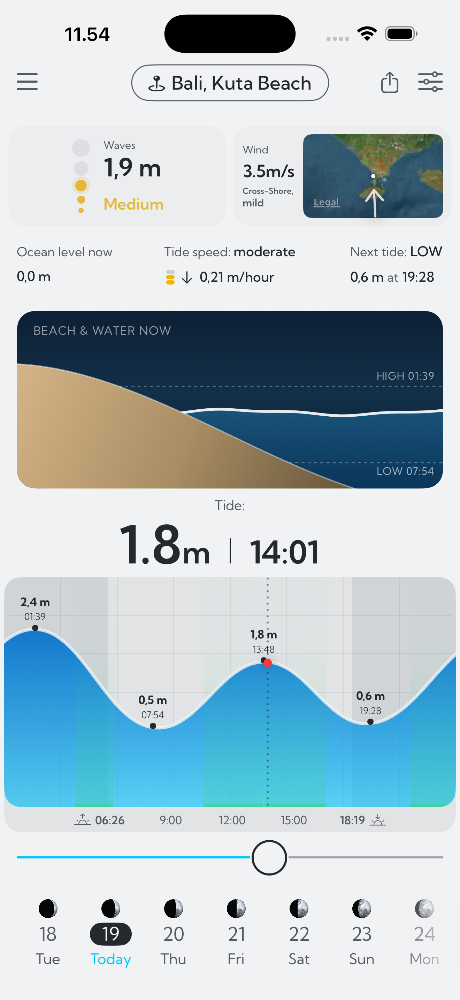
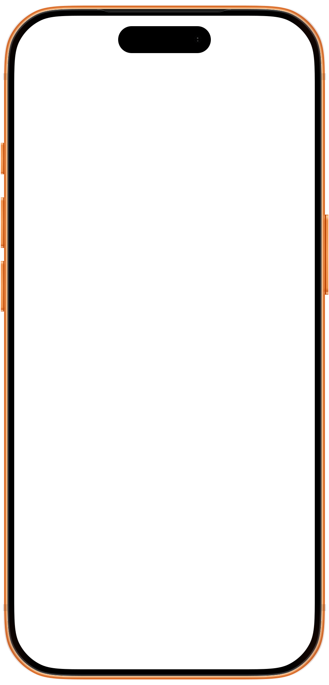
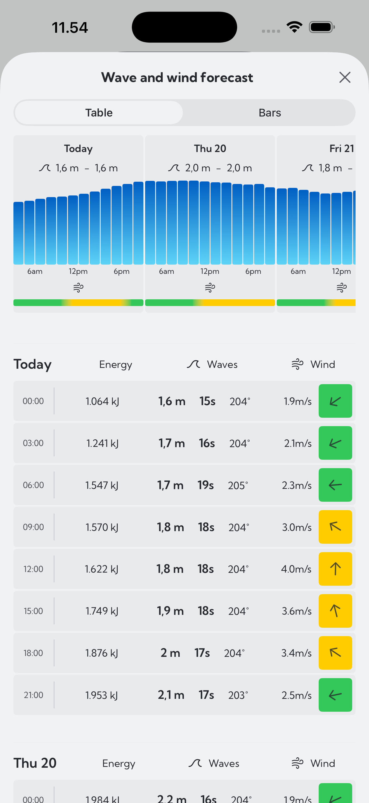
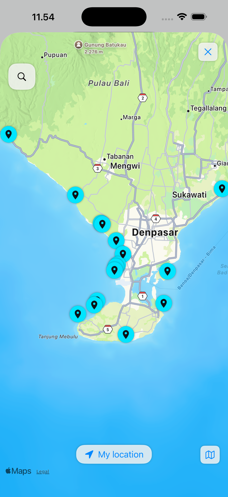
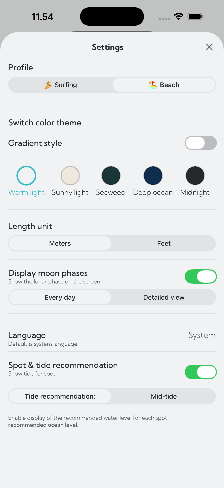
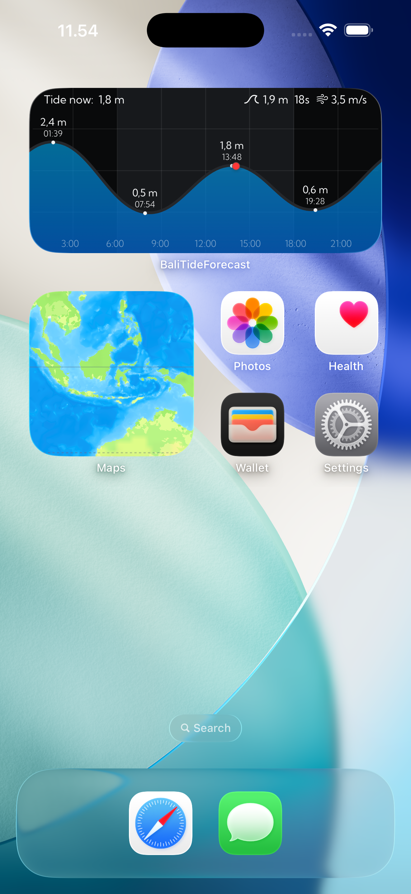
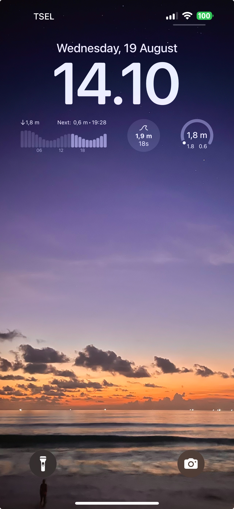
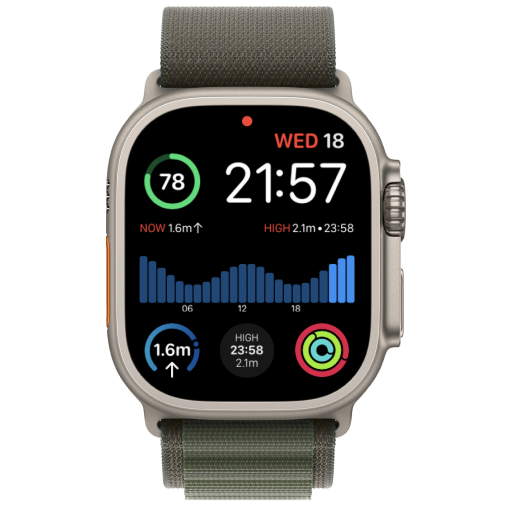
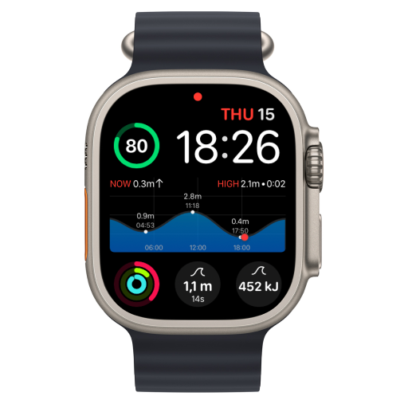

01
Your ocean, hour by hour
An interactive tide chart with the current level, tide speed, upcoming high and low tides, and the exact time for every point in the day.
Bali · Tide · Swell · Wind
Plan a surf, swim, reef walk, or sunset session with tide, swell, wind, and spot conditions in one beautifully simple forecast.


Key features
01
An interactive tide chart with the current level, tide speed, upcoming high and low tides, and the exact time for every point in the day.
02
Choose a surf spot and see its recommended tide window, alongside wave height, period, energy, and wind conditions.
03
Surfing, swimming, walking the beach, or chasing sunset — switch between Surfing and Beach profiles for a more relevant view of the ocean.
04
Send a clear tide and wave forecast image to friends before you head out.
Wave & wind
Get detailed wave and wind forecasts in easy-to-scan chart, bar, and timetable views. Follow moon phases, moonrise, moonset, sunrise, and sunset too.

Spots & map
Browse surf areas, compare spot conditions, and use the map to find the session that fits your day.

Settings
Use metres or feet, choose a theme, set your preferred tide range, and view longer-range forecasts with Pro.

Widgets
Add Bali Tide Forecast to your Home Screen for a live tide chart, current tide, next high or low tide, spot conditions, and wind-and-wave snapshots.

A full tide curve with highs, lows and the current level — sized for the space you give it.

Keep your essential ocean data a glance away with Lock Screen widgets for current tide, next tide, swell, wave energy, and compact tide charts.
Apple Watch
The Apple Watch app brings today's tide graph, current water level, next tide, wave height, period, energy, and wind to the place you check most.
Swipe through the forecast, adjust units and the information you want to see, and stay in sync with your iPhone. Add watch complications and widgets to keep the next tide visible on your favourite watch face.

Bars complication
Curve + swellBali Tide Forecast
Download Bali Tide Forecast and plan your next Bali day around the water.